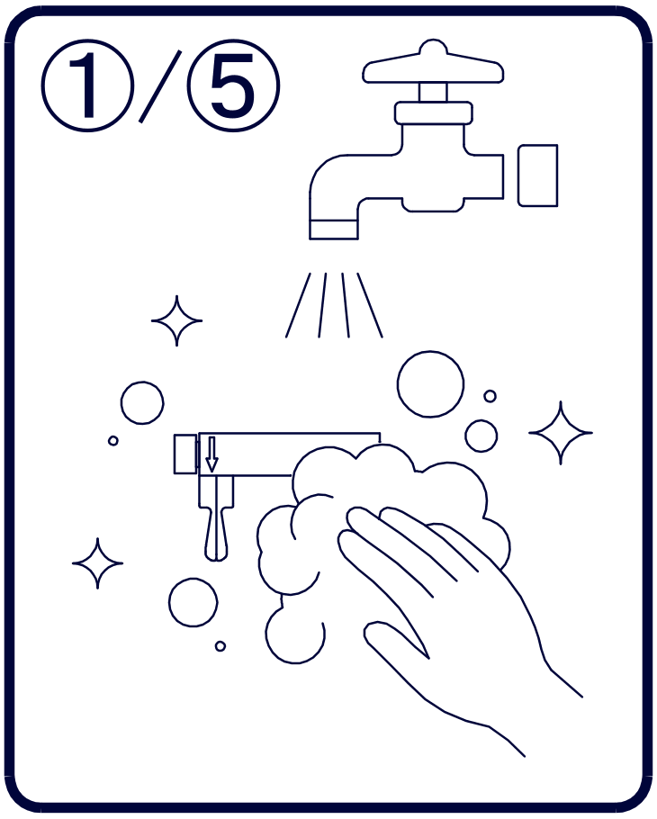
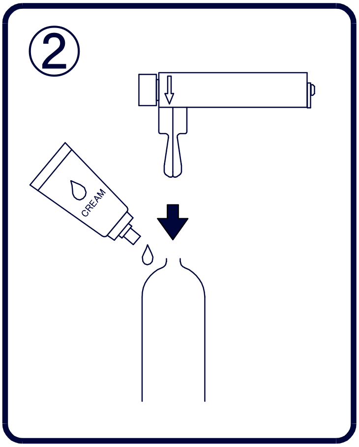
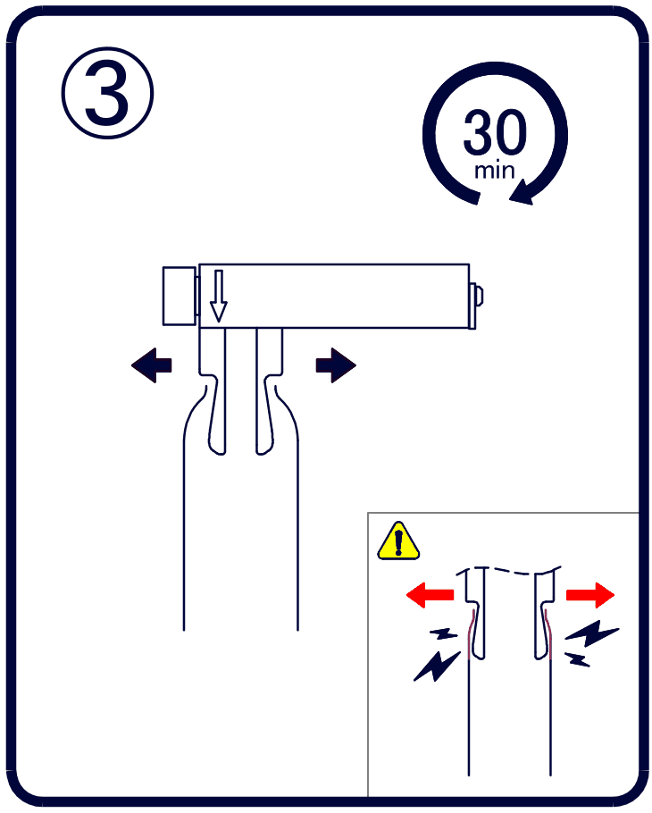
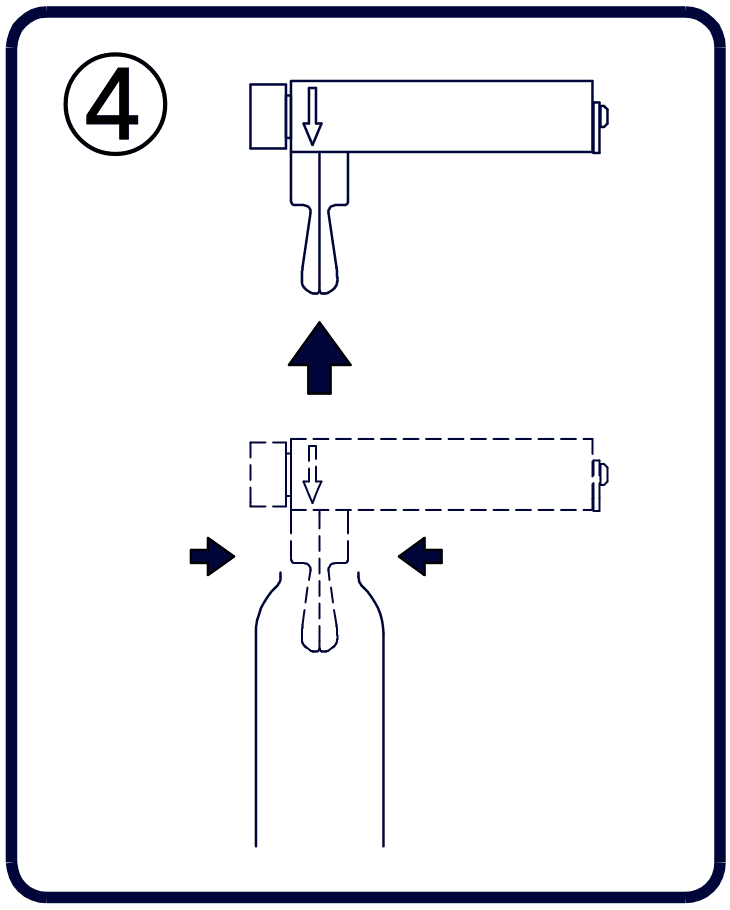
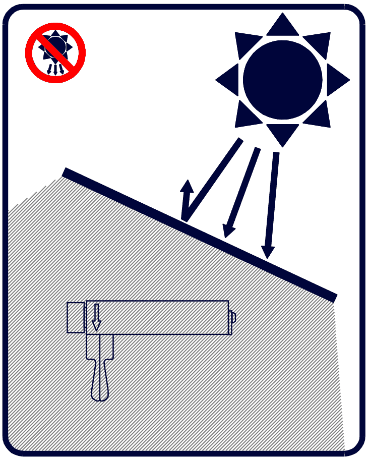
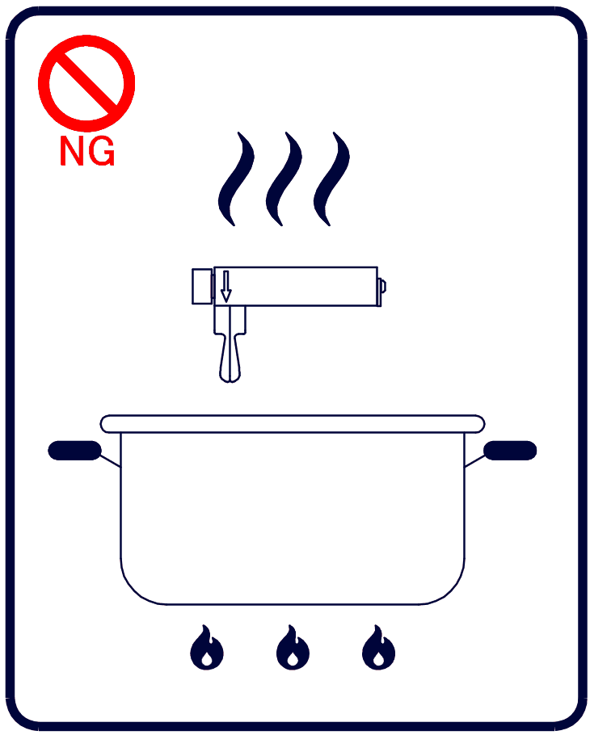
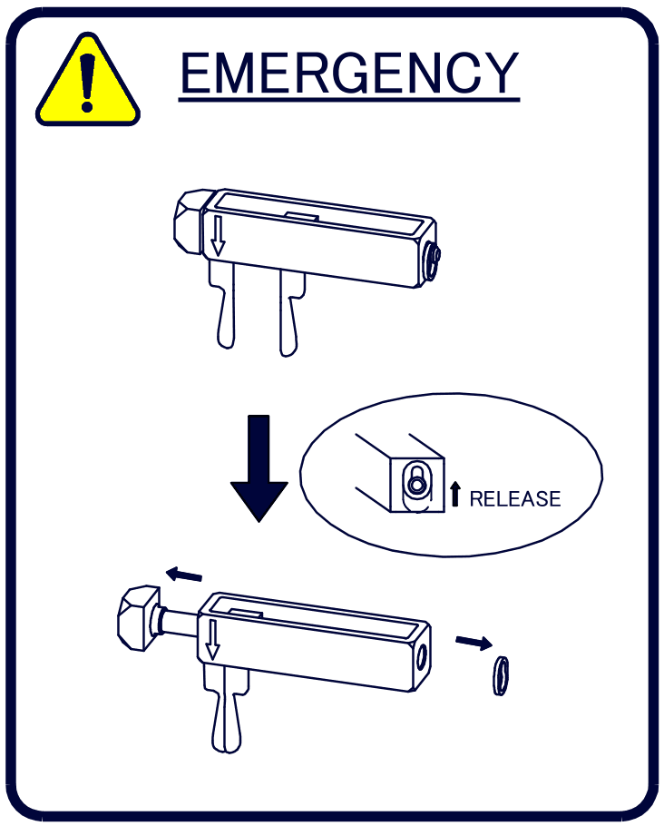

-

①／⑤ 使用前・使用後
中性洗剤で洗う
初めてのご使用前（必須）と毎回の使用前後に、中性洗剤で水洗いし、水気を完全に拭き取ります。消毒する場合はアルコールをご使用ください。
使用前に、本体（特にアーム部分）に割れやヒビがないか目視で確認してください。
-

②
クリームやオイルで潤滑し、先端から入れる
アームと肌をクリームやオイルで十分に保湿・潤滑し、アームを閉じた状態で先端からゆっくり入れます。皮膚や毛を挟まないよう注意してください。
-

③ 30分以内
ハンドルを回して、ゆっくり開く
ハンドルをゆっくり回してアームを開き、痛みを感じない幅で止めます。手を離してもその幅で止まります。
連続使用の上限（安全のため） 1回30分以内、24時間の合計1時間以内。就寝中の使用はできません。
開きすぎ注意 強い痛みを感じる拡張は避けてください（図右下）。 -

④
アームを閉じてから外す
ハンドルを本体側面に刻印された「CLOSE」の矢印の方向へ回してアームを閉じ、ゆっくり取り外します。使用後は①と同じように洗浄してください。送りネジ部に残ったクリーム等も洗い流してください。
-

保管
直射日光・高温多湿を避ける
常温の清潔な場所で保管してください。乳幼児や子どもの手の届く場所には置かないでください。
-

NG
煮沸・熱湯は使えません
変形防止のため、煮沸消毒や熱湯の使用はできません。消毒はアルコールで行ってください。
-

EMERGENCY
外せなくなったとき
無理に引っ張らないでください。
つまみが回る場合：つまみを「CLOSE」の矢印の方向へ回すと、アームが閉じて力が緩み、多くの場合は通常どおり外せます。
つまみが回らない・回しても外れない場合：それ以上力を加えず、本体右端のリリースプレート（平らな鍵穴形状の部品）を図の「RELEASE」の方向へ動かし、鍵穴の大きい丸穴をシャフトに合わせます。シャフトが抜けてアームが外れます。
それでも外れない場合は、それ以上力を加えず、速やかに医療機関へご相談ください。
すぐに使用を中止してください
- 痛み、うっ血、腫れ、しびれなど、少しでも身体に異常を感じた場合は、直ちに使用を中止し、医療機関を受診してください。
- 使用中は、対象部位の色（赤紫色・暗い色への変化）を定期的に確認してください。
- 引き下げた皮膚が元の位置に戻らなくなった場合は、そのままにせず、直ちに救急対応可能な医療機関を受診してください。
- 使用中に破損した場合は、直ちに使用を中止して本体を外し、破片をすべて回収してください。一度破損した製品は使用しないでください。